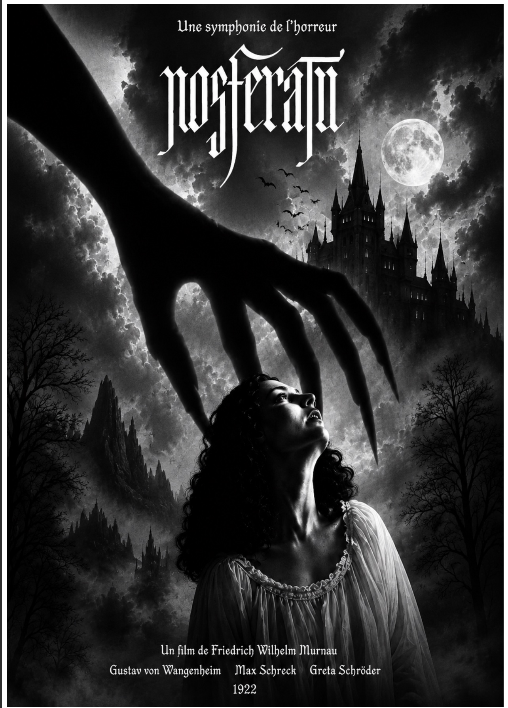

Nosferatu
Design Graphique · Affiche de Film

Dans le cadre de ce projet de design graphique, j'ai réalisé une affiche de film pour le classique du cinéma muet Nosferatu (1922) de Friedrich Wilhelm Murnau. L'objectif était de concevoir une affiche moderne tout en restant fidèle à l'atmosphère sombre et mystérieuse de ce film culte.
J'ai travaillé sous Photoshop sur la gestion des ombres et de la lumière pour créer une tension visuelle forte — la silhouette menaçante aux doigts effilés, le clair-obscur entre la pleine lune et le ciel orageux (AC13.02 — Produire des pistes graphiques et des planches d'inspiration). J'ai également conçu le logo typographique "Nosferatu" dans un style gothique médiéval (AC13.03 — Créer, composer et retoucher des visuels).
Ce projet m'a permis de maîtriser les effets d'ombre et de profondeur sous Photoshop, et de comprendre comment la lumière, la composition et la typographie peuvent ensemble transmettre une émotion — ici la peur et le mystère.
Apprentissages Critiques : AC13.02 · AC13.03
